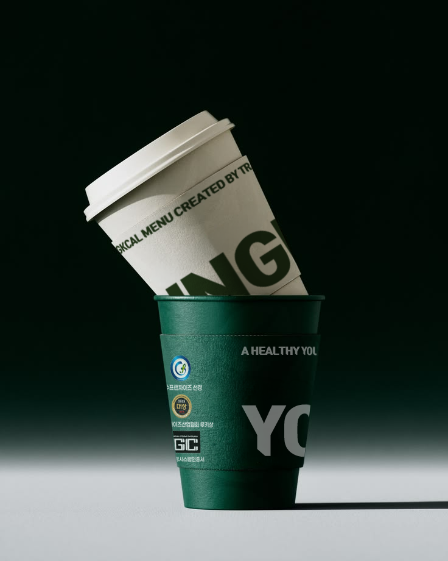
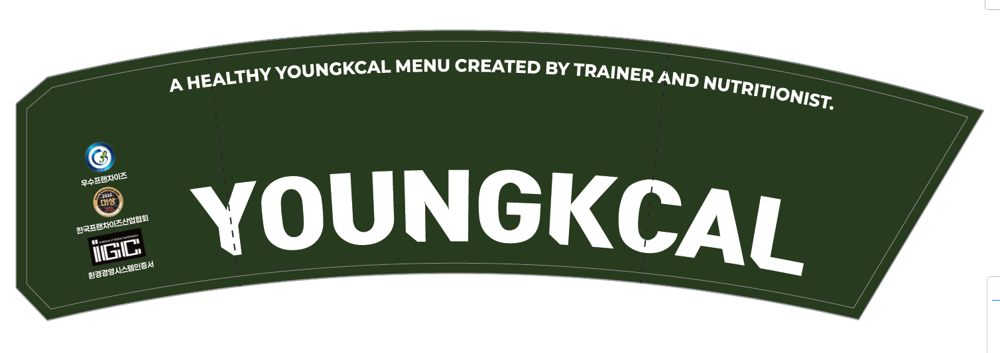

컵 홀더 디자인
브랜드 인지도를 강조한 테이크아웃 컵홀더 디자인입니다.
Tool

Role
Package Design
Year
2026.05
Context
구오컴퍼니
Design
브랜드 톤을 반영해 어두운 그린 계열을 메인 컬러로 적용했습니다.
중앙에는 로고를 크게 배치해 멀리서도 브랜드가 명확하게 보이도록
가시성을 확보했습니다.
상단에는 영칼로리포케의 메인 카피를 배치해 브랜드 메시지를 함께
전달했으며, 한쪽에는 수상 내역을 정리해 브랜드 신뢰도를 높였습니다.

Print Data
